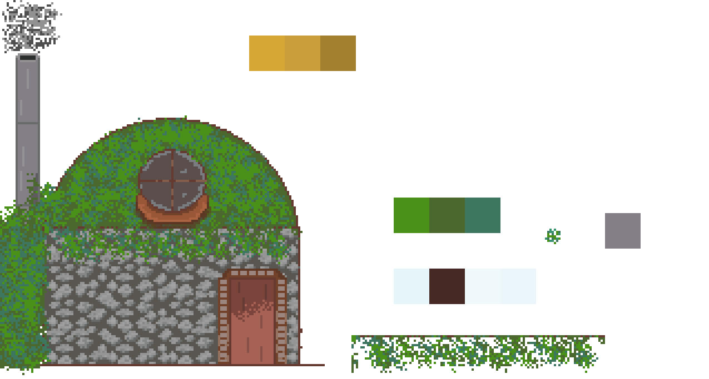

Добро пожаловать в мою миниавтобиографию! Я, Ефименко Виктор, на данный момент являюсь студентом 3-го курса
направления прикладной математики и информатики лучшего вуза страны -
ИТМО,
желаю принять участие в программе обмена Хогвартса. Далее расскажу немного о себе.
Хобби
Музыка
Наверное, первое, что мне приходит в голову, это игра на музыкальных инструментах и музыка в целом. У меня есть классическая, акустическая, электроакустическая
и просто электрогитара, а также укулеле и синтезатор. Если честно, до синтезатора никак руки не дойдут, я почти не умею на нём играть.
В школьную пору у нас с одноклассниками даже была своя музыкальная группа.
Вот ещё решил наиграть мелодию из песни Love Is Gone Vanotek
Геймдев
В свободное время увлекаюсь разработкой игр, собираюсь поучавствовать в ITMO Gamedev Day в следующем году.
У меня есть парочка и 2д, и 3д проектов, но они настолько старые, что стыдно их показывать. Можно сказать после 2-ух годичного перерыва сел за новый проект,
вот недорисованный домик героя, надеюсь закончу.
